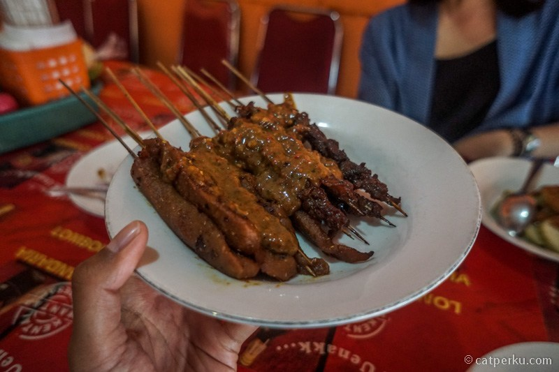
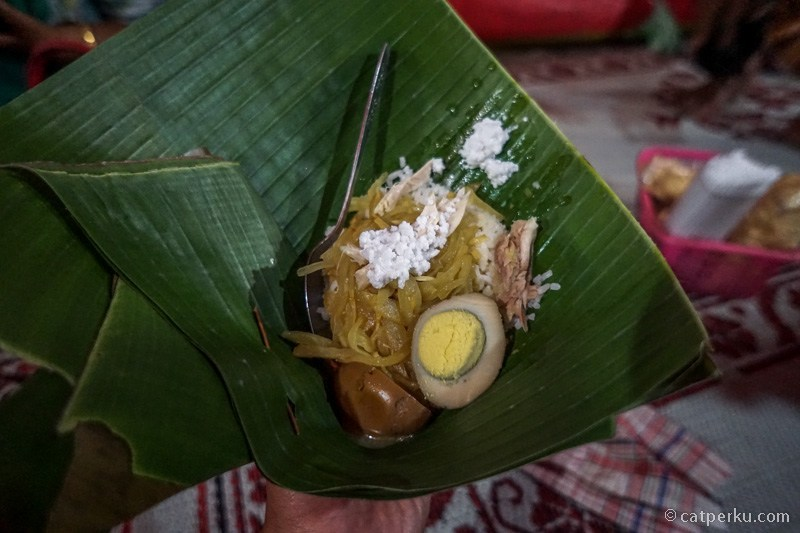
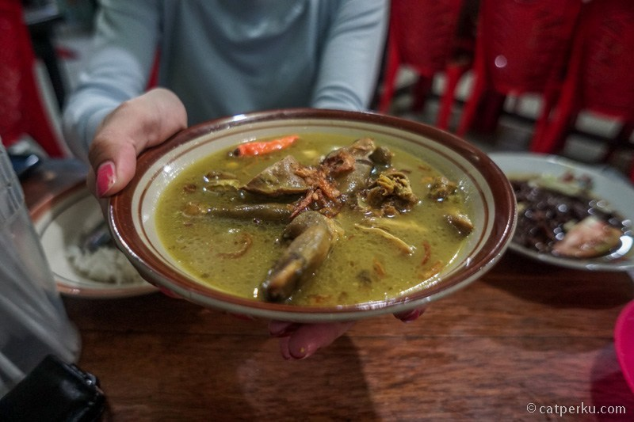
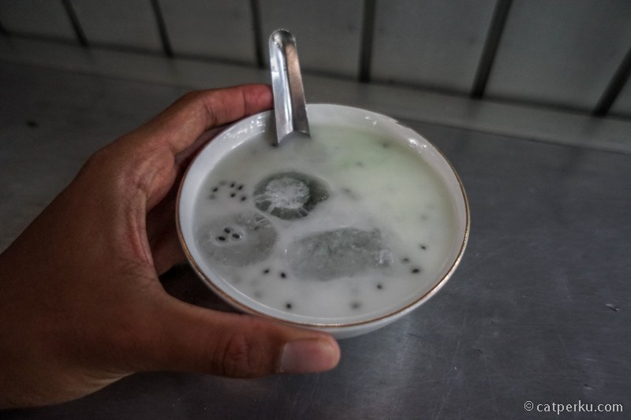
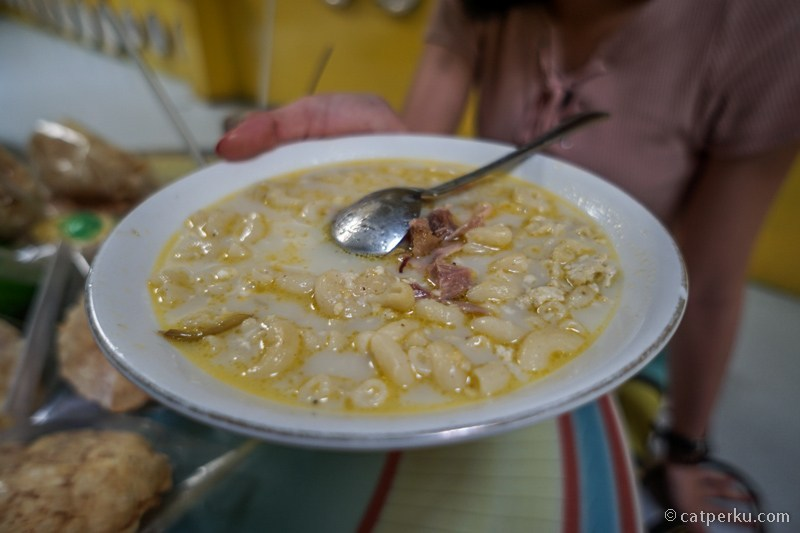
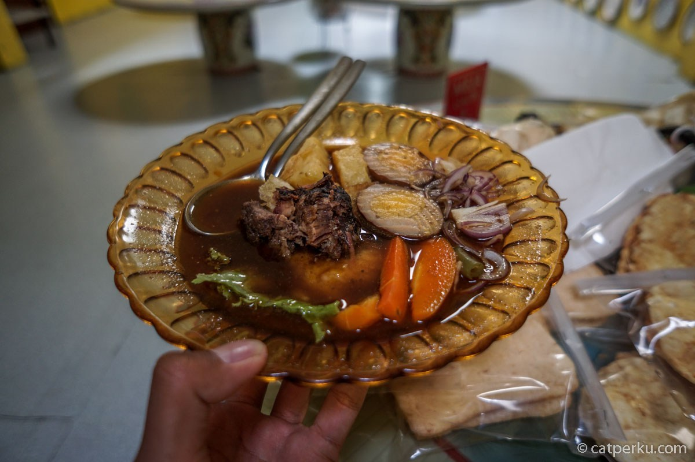

1.Bakmi Ketoprak
Harga Bakmi Ketoprak 1 porsinya RP 13.000 dan dibuka dari pukul 10.30 WIB hingga 17.00 WIB, dan terdapat berbagai jajanan tambahan seperti lento, lumpia, sosis dan jajanan lain dengan variasi harga mulai dari Rp1.000.

2.Es Nini Thowong
Harga Es Nini Thowong 1 porsinya RP 17.000, buka dari pukul 07.00 WIB hingga 19.00 WIB

3.Sate Kere Yu Rebi
Harga Sate Kere Y rebi 1 porsinya RP 30.000, Pusatnya ada di belakang Sriwedari hanya buka dari pukul 10.00—17.00 WIB.Jangan khawatir kalau malam tetap pengen mampir Sate Kere Yu Rebi tetap buka di beda warung, geser sedikit ke arah Penumping pukul 18.00—22.00.

4.Nasi Liwet Yusani

5.Tengkleng Di Warung Mbak Diah

6.Es Dawet Telasih Pasar Gedhe

7.Stup Makaroni di Warung Selat Mbak Lies

8.Selat Bestik di Warung Selat Mbak Lies
